전기기능장 (2017-03-05 기출문제)
1과목: 임의구분
1. Es, Er을 각각 송전단전압, 수전단전압, A, B, C, D를 4단자 정수라 할 때 전력원선도의 반지름은?
- (Es × Er) / D
- (Es × Er) / C
- (Es × Er) / B
- (Es × Er) / A
(정답률: 75%)

2. 동기전동기에 관한 설명 중 옳지 않은 것은?
- 기동 토크가 작다.
- 역률을 조정할 수 없다.
- 난조가 일어나기 쉽다.
- 여자기가 필요하다.
(정답률: 79%)
3. 직류 분권전동기가 있다. 단자 전압이 215V, 전기자 전류가 60A, 전기자 저항이 0.1Ω, 회전 속도 1500rpm 일 때 발생하는 토크는 약 몇 kg·m인가?
- 6.58
- 7.92
- 8.15
- 8.64
(정답률: 58%)
4. 그림과 같은 브리지가 평형되기 위한 임피던스 Zx의 값은 약 몇 Ω인가? (단, Z1=3+j2Ω, R2=4Ω, R3=5Ω이다.)
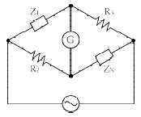
- 4.62-j3.08
- 3.08+j4.62
- 4.24-j3.66
- 3.66+j4.24
(정답률: 63%)
5. 길이 5m의 도체를 0.5Wb/m2의 자장 중에서 자장과 평행한 방향으로 5m/s의 속도로 운동시 킬 때, 유기되는 기전력[V]은?
- 0
- 2.5
- 6.25
- 12.5
(정답률: 56%)
6. 다음과 같은 블록선도의 등가 합성 전달함수는?
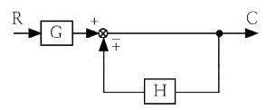
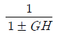
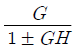
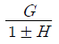
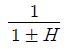
(정답률: 71%)
7. 스너버(snubber) 회로에 관한 설명이 아닌 것은?
- R, C 등으로 구성된다.
- 스위칭으로 인한 전압스파이크를 완화시킨다.
- 전력용 반도체 소자의 보호 회로로 사용된다.
- 반도체 소자의 전류 상승률(di/dt)만을 저감하기 위한 것이다.
(정답률: 78%)
8. 권수비 1:2의 단상 센터탭형 전파정류회로에서 전원 전압이 220V라면 출력 직류전압은 약 몇 V인가?
- 95
- 124
- 180
- 198
(정답률: 68%)
9. 수전용 변전설비의 1차측에 설치하는 차단기의 용량은 주로 어느 것에 의하여 정해지는가?
- 수전계약 용량
- 부하설비의 용량
- 정격차단전류의 크기
- 수전전력의 역률과 부하율
(정답률: 69%)
10. 해독기(decoder)에 대한 설명이다. 틀린 것은?
- 멀티플렉서로 쓸 수 있다.
- 기억회로로 구성되어 있다.
- 입력을 조합하여 한 조합에 대하여 한 출력선만 동작하게 할 수 있다.
- 2진수로 표시된 입력의 조합에 따라 1개의 출력만 동작하도록 한다.
(정답률: 63%)
11. 8극 동기전동기의 기동방법에서 유도전동기 로 기동하는 기동법을 사용하려면 유도전동기의 필요한 극수는 몇 극으로 하면 되는가?
- 6
- 8
- 10
- 12
(정답률: 80%)
12. R=5Ω, L=20mH 및 가변 콘덴서 C(μF)로 구 성된 RLC 직렬회로에 주파수 1000㎐인 교류를 가한 다음 콘덴서를 가변시켜 직렬 공진시킬 때 C의 값은 약 몇 μF인가?
- 1.27
- 2.54
- 3.52
- 4.99
(정답률: 52%)
13. 저항 10√3Ω, 유도리액턴스 10Ω인 직렬회로 에 교류 전압을 인가할 때 전압과 이 회로에 흐르는 전류와의 위상차는 몇 도인가?
- 60°
- 45°
- 30°
- 0°
(정답률: 63%)
14. 송배전선로의 작용 정전용량은 무엇을 계산하는데 사용되는가?
- 선간단락 고장 시 고장전류 계산
- 정상운전 시 전로의 충전전류 계산
- 인접 통신선의 정전 유도 전압 계산
- 비접지 계통의 1선 지락고장 시지락 고장전류 계산
(정답률: 71%)
15. 코일의 성질을 설명한 것 중 틀린 것은?
- 전자석의 성질이 있다.
- 상호 유도 작용이 있다.
- 전원 노이즈 차단 기능이 있다.
- 전압의 변화를 안정시키려는 성질이 있다.
(정답률: 68%)
16. 전기자의 반지름이 0.15m인 직류발전기가 1.5kW의 출력에서 회전수가 1500 rpm이고, 효율은 80%이다. 이 때 전기자 주변속도는 몇m/s 인가? (단, 손실은 무시한다.)
- 11.78
- 18.56
- 23.56
- 30.04
(정답률: 52%)
17. 그림과 같은 회로에서 20Ω에 흐르는 전류는 몇 A 인가?
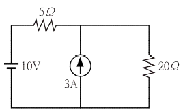
- 0.4
- 0.6
- 1.0
- 1.2
(정답률: 62%)
18. 금속관 공사 시 관을 접지하는데 사용하는 것은?
- 엘보
- 터미널 캡
- 어스 클램프
- 노출 배관용 박스
(정답률: 87%)
19. 고압 또는 특고압 가공전선로로부터 공급을 받는 수용장소의 인입구 또는 이와 근접한 곳에 시설하여야 하는 것은?
- 정류기
- 피뢰기
- 동기조상기
- 직렬리액터
(정답률: 87%)
20. 표준 상태에서 공기의 절연이 파괴되는 전위 경도는 교류(실효값)로 약 몇 [kV/cm]인가?
- 10
- 21
- 30
- 42
(정답률: 72%)
2과목: 임의구분
21. 변압기의 효율이 회전기의 효율보다 좋은 이유는?
- 동손이 적기 때문이다.
- 철손이 적기 때문이다.
- 기계손이 없기 때문이다.
- 동손과 철손이 모두 적기 때문이다.
(정답률: 73%)
22. 다음 ( ) 안에 알맞은 내용으로 옳은 것은?
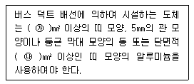
- ㉮ 10, ㉯ 20
- ㉮ 15, ㉯ 25
- ㉮ 20, ㉯ 30
- ㉮ 25, ㉯ 35
(정답률: 75%)
23. %동기 임피던스가 130%인 3상 동기 발전기의 단락비는 약 얼마인가?
- 0.66
- 0.77
- 0.88
- 0.99
(정답률: 71%)
24. 송전선에 코로나가 발생하면 무엇에 의해 전선이 부식되는가?
- 수소
- 아르곤
- 비소
- 산화질소
(정답률: 81%)
25. 현수애자 4개를 1련으로 한 66kV 송전선로가 있다. 현수애자 1개의 절연저항이 2000MΩ이라면 표준경간을 200m로 할 때 1km당의 누설 컨덕턴스는 약 몇 ℧인가?
- 0.58 × 10-9
- 0.63 × 10-9
- 0.73 × 10-9
- 0.83 × 10-9
(정답률: 65%)
26. 3상 유도전동기가 입력 50kW, 고정자 철손 2kW일 때 슬립 5%로 회전하고 있다면 기계적 출력은 몇 kW인가?
- 45.6
- 47.8
- 49.2
- 51.4
(정답률: 51%)
27. 그림은 변압기의 단락시험 회로이다. 임피던스 전압과 정격전류를 측정하기 위해 계측기를 연결해야 할 단자와 단락결선을 하여야 하는 단자를 옳게 나타낸 것은?
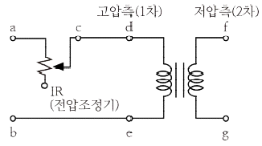
- 임피던스 전압(a-b), 정격전류(c-d), 단락(e-g)
- 임피던스 전압(a-b), 정격전류(d-e), 단락(f-g)
- 임피던스 전압(d-e), 정격전류(f-g), 단락(d-f)
- 임피던스 전압(d-e), 정격전류(c-d), 단락(f-g)
(정답률: 68%)
28. 보호선과 전압선의 기능을 겸한 전선은?
- DV선
- PEM선
- PEL선
- PEN선
(정답률: 78%)
29. 10kW의 농형 유도전동기의 기동방법으로 가장 적당한 것은?
- 전전압 기동법
- Y-Δ 기동법
- 기동 보상기법
- 2차 저항 기동법
(정답률: 80%)
30. 1 전자볼트(eV)는 약 몇 J 인가?
- 1.60 × 10-19
- 1.67 × 10-21
- 1.72 × 10-24
- 1.76 × 109
(정답률: 80%)
31. 다음 그림은 어떤 논리 회로인가?
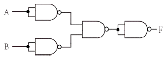
- NOR
- NAND
- exclusive OR(XOR)
- exclusive NOR(XNOR)
(정답률: 62%)
32. 평형 3상 Δ부하에 선간전압 300V가 공급될때 선전류가 30A 흘렀다. 부하 1상의 임피던스는 몇 Ω인가?
- 10
- 10√3
- 20
- 30√3
(정답률: 77%)
33. 그림의 회로에서 입력 전원(vs)의 양(+)의 반주기 동안에 도통하는 다이오드는?
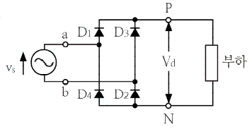
- D1, D2
- D2, D3
- D4, D1
- D1, D3
(정답률: 79%)
34. 저압 가공 인입선의 시설기준이 아닌 것은?
- 전선은 나전선, 절연전선, 케이블을 사용할 것
- 전선이 케이블인 경우 이외에는 인장강도 2.30kN 이상일 것
- 전선의 높이는 철도 또는 궤도를 횡단하는 경우에는 레일면상 6.5m 이상일 것
- 전선이 옥외용 비닐절연전선일 경우에는 사람이 접촉할 우려가 없도록 시설할 것
(정답률: 76%)
35. 전기회로에서 전류는 자기회로에서 무엇과 대응 되는가?
- 자속
- 기자력
- 자속밀도
- 자계의 세기
(정답률: 65%)
36. 전압계의 측정범위를 확대하기 위해 콘스탄탄 또는 망가닌선의 저항을 전압계에 직렬로 접속하는데 이 때의 저항을 무엇이라고 하는가?
- 분류기
- 배율기
- 분압기
- 정류기
(정답률: 83%)
37. 220V인 3상 유도전동기의 전부하 슬립이 3%이다. 공급전압이 200V가 되면 전부하 슬립은 약 몇 %가 되는가?
- 3.6
- 4.2
- 4.8
- 5.4
(정답률: 56%)
38. GTO의 특성으로 옳은 것은?
- 게이트(gate)에 역방향 전류를 흘려서 주전류를 제어한다.
- 소스(source)에 순방향 전류를 흘려서 주전류를 제어한다.
- 드레인(drain)에 역방향 전류를 흘려서 주전류를 제어한다.
- 드레인(drain)에 순방향 전류를 흘려서 주전류를 제어한다.
(정답률: 74%)
39. 전력설비에 대한 설치 목적의 연결이 옳지 않은 것은?
- 소호 리액터 –지락전류 제한
- 한류 리액터 –단락전류 제한
- 직렬 리액터 –충전전류 방전
- 분로 리액터 –페란티 현상 방지
(정답률: 72%)
40. 다음은 어떤 게이트의 설명인가?
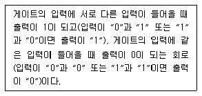
- OR 게이트
- AND 게이트
- NAND 게이트
- EX-OR 게이트
(정답률: 71%)
3과목: 임의구분
41. 파형률과 파고율이 같고 그 값이 1인 파형은?
- 고조파
- 삼각파
- 구형파
- 사인파
(정답률: 80%)
42. 지중에 매설되어 있는 케이블의 전식을 방지하기 위하여 누설전류가 흐르도록 길을 만들어 금속표면의 부식을 방지하는 방법은?
- 회생 양극법
- 외부 전원법
- 강제 배류법
- 배양법
(정답률: 72%)
43. 하나의 철심에 동일한 권수로 자기 인덕턴스 L[H]의 코일 두 개를 접근해서 감고, 이것을 자속 방향이 동일하도록 직렬 연결할 때 합성 인덕턴스[H]는? (단, 두 코일의 결합계수는 0.5 이다.)
- L
- 2L
- 3L
- 4L
(정답률: 65%)
44. 고·저압 진상용 콘덴서(SC)의 설치위치로 가장 효과적인 것은?
- 부하와 중앙에 분산 배치하여 설치하는 방법
- 수전 모선단에 중앙 집중으로 설치하는 방법
- 수전 모선단에 대용량 1개를 설치하는 방법
- 부하 말단에 분산하여 설치하는 방법
(정답률: 70%)
45. 정격전압이 200V, 정격출력 50kW인 직류분권 발전기의 계자 저항이 20Ω 일 때 전기자 전류는 몇 A인가?
- 10
- 20
- 130
- 260
(정답률: 52%)
46. 전압원 인버터에서 암 단락(arm short)을 방지하기 위한 방법은?
- 데드타임 설정
- 스위칭 소자 양단에 커패시터 접속
- 스위칭 소자 양단에 서지 흡수기 접속
- 스위칭 소자 양단에 역병렬로 다이오드 접속
(정답률: 66%)
47. 16진수 B8516를 10진수로 표시하면?
- 738
- 1475
- 2213
- 2949
(정답률: 66%)
48. 진공 중에 2m 떨어진 2개의 무한 평형 도선에 단위 길이당 10-7N의 반발력이 작용할 때, 도선에 흐르는 전류는?
- 각 도선에 1A가 반대 방향으로 흐른다.
- 각 도선에 1A가 같은 방향으로 흐른다.
- 각 도선에 2A가 반대 방향으로 흐른다.
- 각 도선에 2A가 같은 방향으로 흐른다.
(정답률: 60%)
49. 철근콘크리트주로서 그 전체의 길이가 16m초과 20m 이하이고, 설계하중이 6.8kN 이하인 것을 지반이 연약한 곳 이외에 시설하려고 한다. 지지물의 기초 안전율을 고려하지 않고 철근 콘크리트주를 시설하려면 묻히는 깊이를 몇 m이상으로 시설하여야 하는가?
- 2.5
- 2.8
- 3.0
- 3.2
(정답률: 75%)
50. 여자기(Exciter)에 대한 설명으로 옳은 것은?
- 주파수를 조정하는 것이다.
- 부하 변동을 방지하는 것이다.
- 직류 전류를 공급하는 것이다.
- 발전기의 속도를 일정하게 하는 것이다.
(정답률: 77%)
51. 변압기의 병렬운전 조건에 대한 설명으로 틀린 것은?
- 극성이 같아야 한다.
- 권수비, 1차 및 2차의 정격 전압이 같아야 한다.
- 각 변압기의 저항과 누설 리액턴스비가 같아야 한다.
- 각 변압기의 임피던스가 정격 용량에 비례하여야 한다.
(정답률: 73%)
52. 전력 원선도에서 구할 수 없는 것은?
- 선로손실
- 송전효율
- 수전단 역률
- 과도안정 극한전력
(정답률: 82%)
53.
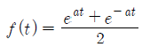
의 라플라스 변환은?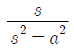
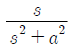
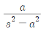
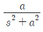
(정답률: 56%)
54. 공사원가를 구성하고 있는 순공사 원가에 포함되지 않는 것은?
- 경비
- 재료비
- 노무비
- 일반관리비
(정답률: 83%)
55. 3σ법의
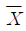
관리도에서 공정이 관리 상태에 있는데도 불구하고 관리상태가 아니라고 판정하는 제1종 과오는 약 몇 %인가?- 0.27
- 0.54
- 1.0
- 1.2
(정답률: 56%)
56. 검사의 종류 중 검사공정에 의한 분류에 해당되지 않는 것은?
- 수입검사
- 출하검사
- 출장검사
- 공정검사
(정답률: 80%)
57. 워크 샘플링에 관한 설명 중 틀린 것은?
- 워크 샘플링은 일명 스냅리딩(Snap Reading)이라 불린다.
- 워크 샘플링은 스톱워치를 사용하여 관측 대상을 순간적으로 관측하는 것이다.
- 워크 샘플링은 영국의 통계학자 L.H.C. Tippet가 가동률 조사를 위해 창안한 것이다.
- 워크 샘플링은 사람의 상태나 기계의 가동 상태 및 작업의 종류 등을 순간적으로 관측 하는 것이다.
(정답률: 66%)
58. 부적합품률이 20%인 공정에서 생산되는 제품을 매시간 10개씩 샘플링 검사하여 공정을 관리하려고 한다. 이 때 측정되는 시료의 부적합품 수에 대한 기댓값과 분산은 약 얼마인가?
- 기댓값 : 1.6, 분산 : 1.3
- 기댓값 : 1.6, 분산 : 1.6
- 기댓값 : 2.0, 분산 : 1.3
- 기댓값 : 2.0, 분산 : 1.6
(정답률: 59%)
59. 설비배치 및 개선의 목적을 설명한 내용으로 가장 관계가 먼 것은?
- 재공품의 증가
- 설비투자 최소화
- 이동거리의 감소
- 작업자 부하 평준화
(정답률: 66%)
60. 설비보전조직 중 지역보전(area maintenance)의 장·단점에 해당하지 않는 것은?
- 현장 왕복 시간이 증가한다.
- 조업요원과 지역보전요원과의 관계가 밀접해진다.
- 보전요원이 현장에 있으므로 생산 본위가 되며 생산의욕을 가진다.
- 같은 사람이 같은 설비를 담당하므로 설비를 잘 알며 충분한 서비스를 할 수 있다.
(정답률: 76%)
따라서 전력원선도의 반지름은 (Es × Er) / B가 됩니다. Es는 송전단전압, Er은 수전단전압을 나타내며, B는 수전단전압을 송전단전압으로 나눈 값입니다. 이 값이 클수록 전류가 작아지므로 전력손실이 작아지고, 전력원선도의 반지름이 작아집니다.